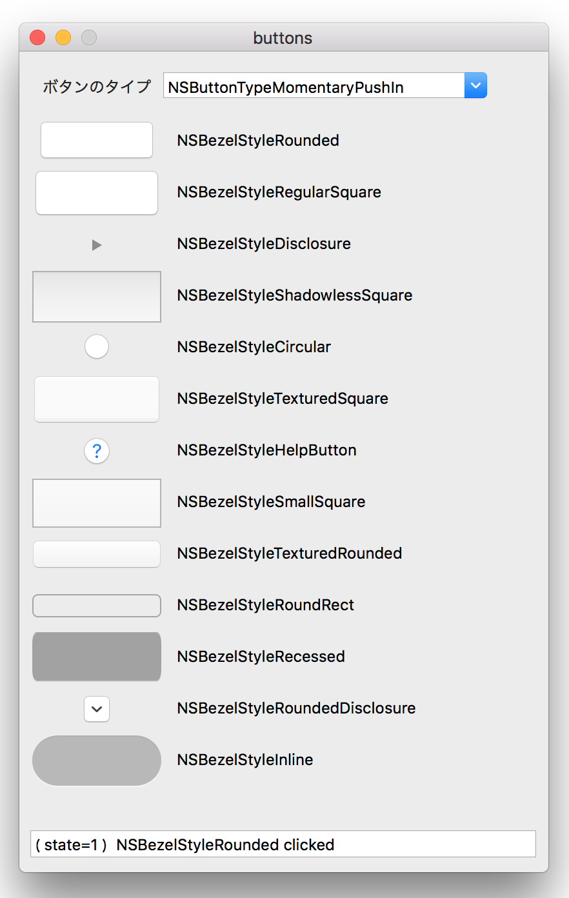
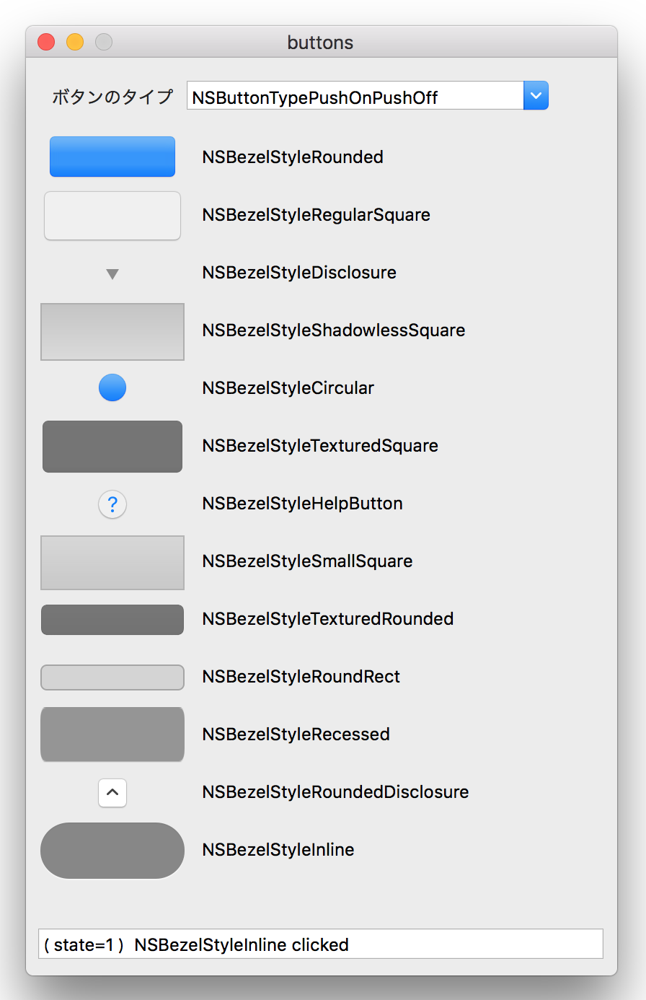
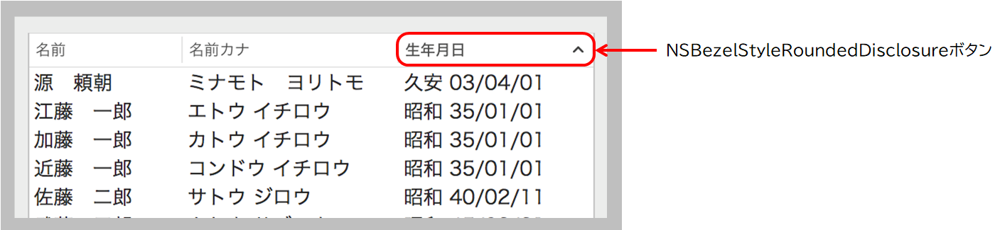

プッシュ型のボタンをプログラムより作成する
（チェックボックス、ラジオボタン、ポップアップボタンを除く）
NSButtonオブジェクトの主な構成要素は、ボタンの外観（スタイル）とボタンの動作（タイプ）である。
サンプルアプリケーションに13種類のスタイルのボタンを作成してみた。また、5種類（実質3種類）のボタンタイプを選べるようにした。タイプはコンボボックスから選択し、ボタンをクリックするとそのタイプで動作する。

ボタンのスタイル
ボタンのスタイルは bezelStyleプロパティで定義する。
プッシュボタン
NSBezelStyleRounded
NSBezelStyleRegularSquare
NSBezelStyleShadowlessSquare
NSBezelStyleCircular
NSBezelStyleTexturedSquare
NSBezelStyleSmallSquare
NSBezelStyleTexturedRounded
NSBezelStyleRoundRect
NSBezelStyleRecessed
NSBezelStyleInline
以上のボタンはサイズをframeプロパティの設定によって変えることができる。ただし、NSBezelStyleTexturedRoundedとNSBezelStyleRoundRectボタンはサイズの高さを変えても見かけの高さは変わらない（30ピクセル程度？）
ヘルプボタン
NSBezelStyleHelpButton
動作は基本的なプッシュボタンと同じ。クエスチョンマークが表示される。
矢印の方向が変わるボタン
NSBezelStyleDisclosure
右矢印と下矢印が切り替わる。例えば、XcodeのProject Navigatorのフォルダの表示/非表示を切り替えるようなボタン（NSOutlineViewクラス）
NSBezelStyleRoundedDisclosure
上矢印と下矢印が切り替わる。例えばをテーブルビューのヘッダをクリックして列のソートを行うとき、昇順/降順を示す矢印にあたる。
ボタンのタイプ
ボタンのタイプは setButtonTypeメソッドで指定するNSButtonType定数に定義する。
例えば、プッシュボタンボタンはクリックしたときに背景色が変わるが、この変わり方がボタンのタイプにとって異なる。変化の仕方によってボタンタイプは次の三つのグループに分かれる。
タイプ１（PushIn型）
NSButtonTypeMomentaryPushIn
NSButtonTypeMomentaryLight も同じ動作
クリックでマウスボタンを押すとボタンの背景色が変わり、離すと元に戻る。デフォルトの背景色が白色のボタンは、青色（NSBezelStyleRoundedボタン）またはグレーに変わる。背景色がグレーのボタンは、より濃いグレーに変わる。
なお、矢印ボタンの方向は変わらない。
タイプ２
NSButtonTypeMomentaryChange
クリックしても形状に何の変化もない。
タイプ３（OnOff型）
NSButtonTypePushOnPushOff
NSButtonTypeOnOff も同じ動作
ボタンをクリックするごとに、ボタンのstateプロパティに連動して背景色が切り替わる。背景色の変化の仕方は、プロパティがNOのときはデフォルトの色、YESのときはタイプ１と同ようにグレー/青色に変わる。背景色は次にクリックするまで変わらない。
stateプロパティがYESのときのボタンの背景色/形状

stateプロパティ
ボタンオブジェクトのstateプロパティは、NSBottonクラスに定義されたBOOL型の変数である。ボタンをクリックするたびに、フリップフロップ的にYES/NOの値が切り替わる。
タイプ３（OnOff型）のボタンではプロパティのYES/NO値に連動してボタンの外観が変わり、処理の分岐の判定も行うので不可欠のプロパティである。（１/タイプ２ではあまり使い道がなさそう）
ボタンをクリックしたときのアクション
プログラムでアクションを定義するには、setActionメソッドによりボタンをクリックしたときに起動するメソッド名（シグネチャ）を指定する。
メソッドの実装
ボタンをクリックする場所について
矢印ボタン、ヘルプボタンはボタンのサイズ（frame.size）を大きくしても、表示されるボタンの大きさは変わらない。しかしボタンの実サイズは指定したサイズなので、表示されているボタンの外側をクリックしたときアクションが起動することがある。
テーブルトビューのヘッダをクリックしたとき、ソートの矢印の向きが変わるのは、これを利用したものであろう。

ソースコード
UAView
ボタンを配置するビュー
[補足]
インタフェースビルダで作成するボタンについて
オブジェクトライブラリから追加できるボタンの属性は、ここで紹介したボタンのデフォルトの設定と異なっていることは留意されたい。
例えば頻繁に利用される、Pushボタン（Style : Push, Type : Momentary Push In）は、動作はNSBezelStyleRoundedボタンと同じだが、サイズの高さが変更不可になっている。